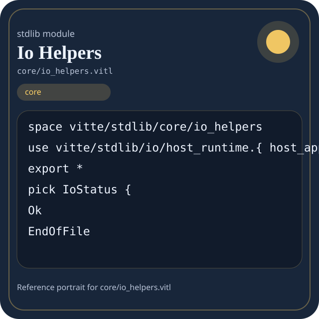

Stdlib module core/io_helpers.vitl
This page is a wiki-style reference for one concrete stdlib file. It explains what the file owns, where it fits in the family, and how to decide whether this is the right surface to depend on.

core/io_helpers.vitl.Family: core
Kind: public stdlib surface
Page style: this reference follows the same “encyclopedic card + portrait + usage contract” logic as the keyword pages, but for stdlib modules.
Summary
- Overview
- Purpose
- Taxonomy
- Implementation profile
- Top-level API inventory
- Position in family
- Declaration map
- Representative signatures
- How to use this module
- User example
- Keyword coverage
- Source shape
- Source landmarks
- Source organization
- Complete API catalog
- Integration boundaries
- Composition guidance
- Relationship table
- Neighbor modules
Overview
| Field | Value |
|---|---|
| Path | core/io_helpers.vitl |
| Family | core |
| Kind | public stdlib surface |
| Line count | 451 |
| Declared procedures | 21 |
| Declared forms/picks | 5 |
`core/io_helpers.vitl` is a public stdlib surface inside the `core` family. It should be read as one focused slice of the broader family responsibility: Portable low-level building blocks: types, strings, memory helpers, panic/runtime-adjacent basics, and reusable utility routines.
Purpose
This file should be chosen because of responsibility, not because its name “sounds close enough”. Inside the core family, it carries one focused part of the contract and keeps that responsibility separate from neighboring concerns.
- A manifest validator stores names and counters with `core` types.
- A pure helper normalizes a string or integer without touching host state.
- The same helper can be reused in compiler code, stdlib code, and user code.
Taxonomy
Think of this page as a generated encyclopedia entry rather than a hand-written tutorial. The goal is to show what kind of module this is, how dense it is, and what reading strategy makes sense before depending on it.
- Large algorithm surface: this file exposes many procedures and likely acts as a domain toolkit rather than a single thin wrapper.
- Owns domain vocabulary: the module declares data shapes in addition to executable helpers, so its types are part of the contract.
- Narrow dependency fan-in: a small set of imports suggests a focused collaboration surface.
- Explicit export surface: the file ends with visible export declarations instead of relying only on implicit namespace discovery.
Implementation profile
This profile is inferred directly from the source text. It does not replace reading the file, but it tells you quickly whether the module is mostly declarative, loop-heavy, branch-heavy, or organized around many small exits.
| Signal | Count | What it suggests |
|---|---|---|
if | 32 | Branching density and local decision-making. |
while | 10 | Loop-heavy or iterative implementation style. |
for | 0 | Collection-style traversal at source level. |
match | 0 | Variant-driven branching or grammar-style decoding. |
let | 41 | Local state and intermediate value density. |
give | 43 | Number of explicit exit points and result shaping. |
Top-level API inventory
| Surface | Items |
|---|---|
| Procedures | ok_result, error_result, empty_read_result, empty_write_result, file_info, read_text, write_text, append_text, read_lines, write_lines, exists, readable |
| Forms | IoResult, ReadResult, WriteResult, FileInfo |
| Picks | IoStatus |
| Constants | none declared at top level |
| Exports | * |
Imported surfaces
vitte/stdlib/io/host_runtime.{ host_append_file, host_file_exists, host_is_file, host_runtime_available, host_write_file, host_read_file, host_mkdir_all } export
Position in family
This file is module 4 of 9 in the core family when ordered by path. By procedure count it ranks 6, and by line count it ranks 2. Those ranks are useful as rough signals of breadth, not as quality judgments.
Declaration map
The declaration map turns raw source into a scan-friendly catalog. It is useful when the file is large enough that a reader wants to orient by kinds of surfaces first.
| Line | Name | Kind | Role |
|---|---|---|---|
| 1 | vitte/stdlib/core/io_helpers | space | Declares the namespace that anchors this file in the stdlib tree. |
| 3 | vitte/stdlib/io/host_runtime.{ host_append_file, host_file_exists, host_is_file, host_runtime_available, host_write_file, host_read_file, host_mkdir_all } | use | Imports a sibling or supporting surface used by the module. |
| 7 | IoStatus | pick | Introduces a tagged variant type used to model distinct outcomes. |
| 16 | IoResult | form | Introduces a structured data shape that other procedures can exchange. |
| 22 | ReadResult | form | Introduces a structured data shape that other procedures can exchange. |
| 28 | WriteResult | form | Introduces a structured data shape that other procedures can exchange. |
| 34 | FileInfo | form | Introduces a structured data shape that other procedures can exchange. |
| 42 | ok_result | proc | Represents one top-level surface in the file contract and should be read as part of the module boundary. |
| 50 | error_result | proc | Represents one top-level surface in the file contract and should be read as part of the module boundary. |
| 58 | empty_read_result | proc | Owns byte movement or host I/O interaction. |
| 66 | empty_write_result | proc | Owns byte movement or host I/O interaction. |
| 74 | file_info | proc | Owns byte movement or host I/O interaction. |
| 96 | read_text | proc | Owns byte movement or host I/O interaction. |
| 124 | write_text | proc | Owns byte movement or host I/O interaction. |
| 152 | append_text | proc | Represents one top-level surface in the file contract and should be read as part of the module boundary. |
| 180 | read_lines | proc | Owns byte movement or host I/O interaction. |
| 213 | write_lines | proc | Owns byte movement or host I/O interaction. |
| 231 | exists | proc | Represents one top-level surface in the file contract and should be read as part of the module boundary. |
| 243 | readable | proc | Represents one top-level surface in the file contract and should be read as part of the module boundary. |
| 251 | writable | proc | Represents one top-level surface in the file contract and should be read as part of the module boundary. |
| 259 | basename | proc | Represents one top-level surface in the file contract and should be read as part of the module boundary. |
| 283 | dirname | proc | Represents one top-level surface in the file contract and should be read as part of the module boundary. |
| 316 | extension | proc | Represents one top-level surface in the file contract and should be read as part of the module boundary. |
| 347 | join_path | proc | Owns path semantics, traversal, or normalization. |
| 359 | normalize_newlines | proc | Represents one top-level surface in the file contract and should be read as part of the module boundary. |
| 377 | read_bytes | proc | Owns byte movement or host I/O interaction. |
| 397 | write_bytes | proc | Owns byte movement or host I/O interaction. |
| 411 | io_helpers_selftest | proc | Represents one top-level surface in the file contract and should be read as part of the module boundary. |
The table is exhaustive for top-level declarations of the selected kinds. This file declares 28 matching surfaces.
Representative signatures
These signatures are shown in source order so the page keeps the feel of a reference manual, not just a keyword cloud.
pick IoStatus {(line 7)form IoResult {(line 16)form ReadResult {(line 22)form WriteResult {(line 28)form FileInfo {(line 34)proc ok_result(message: string) -> IoResult {(line 42)proc error_result(status: IoStatus, message: string) -> IoResult {(line 50)proc empty_read_result(status: IoStatus) -> ReadResult {(line 58)proc empty_write_result(status: IoStatus) -> WriteResult {(line 66)proc file_info(path: string) -> FileInfo {(line 74)proc read_text(path: string) -> ReadResult {(line 96)proc write_text(path: string, data: string) -> WriteResult {(line 124)proc append_text(path: string, data: string) -> WriteResult {(line 152)proc read_lines(path: string) -> [string] {(line 180)proc write_lines(path: string, lines: [string]) -> WriteResult {(line 213)proc exists(path: string) -> bool {(line 231)proc readable(path: string) -> bool {(line 243)proc writable(path: string) -> bool {(line 251)
The list is intentionally capped here; the source file declares 26 matching signatures in total.
How to use this module
Start by reading the file as an ownership boundary. Ask three questions: what enters this module, what stable types or procedures it exports, and what adjacent module should stay outside of it.
- Read
spaceand top-level imports first so the ownership boundary ofcore/io_helpers.vitlis explicit. - Read declared forms and picks before algorithms so the data vocabulary is stable in your head.
- Traverse procedures in source order; the early helpers usually explain the naming and numeric conventions used later.
- Only after that compare neighbor modules, because the right boundary choice matters more than memorizing one helper name.
User example
This example is generated from the actual stdlib module surface. Its job is not to be the smallest snippet possible; its job is to show a realistic consumer-shaped file that exercises the module and mirrors the language keywords the module itself relies on.
space demo/core_io_helpers
use vitte/stdlib/core/io_helpers
form UserReport {
label: string,
ready: bool
}
pick UserOutcome {
case Ready(message: string)
case Empty(reason: string)
}
proc run_example() -> UserOutcome {
let entries = read_lines("sample")
let ready: bool = exists("sample")
let failed: bool = false
let stable: bool = ready and true
let fallback: bool = ready or false
let idx: int = 0
let count: int = 0
while idx < entries.len {
set count = count + 1
set idx = idx + 1
}
if not ready {
give UserOutcome.Empty("module not ready")
} else {
give UserOutcome.Ready("ok")
}
let copies: f64 = 1 as f64
}
export run_exampleKeyword coverage
This table makes the “all keywords of the module” requirement auditable. It compares the detected Vitte keywords in the source file with the generated consumer example above.
| Keyword | Present in module source | Used in generated user example |
|---|---|---|
space | yes | yes |
use | yes | yes |
form | yes | yes |
pick | yes | yes |
proc | yes | yes |
let | yes | yes |
set | yes | yes |
if | yes | yes |
else | yes | yes |
while | yes | yes |
give | yes | yes |
export | yes | yes |
true | yes | yes |
false | yes | yes |
and | yes | yes |
or | yes | yes |
not | yes | yes |
as | yes | yes |
The generated snippet exercises every detected Vitte keyword used by this module.
Source shape
space vitte/stdlib/core/io_helpers
use vitte/stdlib/io/host_runtime.{ host_append_file, host_file_exists, host_is_file, host_runtime_available, host_write_file, host_read_file, host_mkdir_all }
export *
pick IoStatus {
Ok
EndOfFile
NotFound
PermissionDenied
InvalidInput
IOErrorThe excerpt is not meant to replace the file. It exists to make the module recognizable at first glance, the same way a Wikipedia infobox helps the reader orient before reading the whole article.
Source landmarks
Large files are easier to retain when they have visible landmarks. When the source contains explicit section banners, they are surfaced here; otherwise the first major declarations are used as anchors.
- Line 1:
space vitte/stdlib/core/io_helpers - Line 3:
use vitte/stdlib/io/host_runtime.{ host_append_file, host_file_exists, host_is_file, host_runtime_available, host_write_file, host_read_file, host_mkdir_all } - Line 5:
export * - Line 7:
pick IoStatus { - Line 16:
form IoResult { - Line 22:
form ReadResult { - Line 28:
form WriteResult { - Line 34:
form FileInfo {
Source organization
When a file carries its own internal chaptering, those chapters usually reveal the intended reading order better than a flat symbol list. This section reconstructs that organization from the source itself.
File surfaces
Top-level items: 29. Procedures: 21. Data surfaces: 5. Constants: 0.
First visible names: vitte/stdlib/core/io_helpers, vitte/stdlib/io/host_runtime.{ host_append_file, host_file_exists, host_is_file, host_runtime_available, host_write_file, host_read_file, host_mkdir_all }, *, IoStatus, IoResult, ReadResult, WriteResult, FileInfo, ok_result, error_result
Complete API catalog
This catalog is the exhaustive file-level index for the module. It is intentionally closer to a generated encyclopedia appendix than to a tutorial summary.
Data surfaces
| Line | Name | Signature | Role |
|---|---|---|---|
| 7 | IoStatus | pick IoStatus { | Introduces a tagged variant type used to model distinct outcomes. |
| 16 | IoResult | form IoResult { | Introduces a structured data shape that other procedures can exchange. |
| 22 | ReadResult | form ReadResult { | Introduces a structured data shape that other procedures can exchange. |
| 28 | WriteResult | form WriteResult { | Introduces a structured data shape that other procedures can exchange. |
| 34 | FileInfo | form FileInfo { | Introduces a structured data shape that other procedures can exchange. |
Procedures
| Line | Name | Signature | Role |
|---|---|---|---|
| 42 | ok_result | proc ok_result(message: string) -> IoResult { | Represents one top-level surface in the file contract and should be read as part of the module boundary. |
| 50 | error_result | proc error_result(status: IoStatus, message: string) -> IoResult { | Represents one top-level surface in the file contract and should be read as part of the module boundary. |
| 58 | empty_read_result | proc empty_read_result(status: IoStatus) -> ReadResult { | Owns byte movement or host I/O interaction. |
| 66 | empty_write_result | proc empty_write_result(status: IoStatus) -> WriteResult { | Owns byte movement or host I/O interaction. |
| 74 | file_info | proc file_info(path: string) -> FileInfo { | Owns byte movement or host I/O interaction. |
| 96 | read_text | proc read_text(path: string) -> ReadResult { | Owns byte movement or host I/O interaction. |
| 124 | write_text | proc write_text(path: string, data: string) -> WriteResult { | Owns byte movement or host I/O interaction. |
| 152 | append_text | proc append_text(path: string, data: string) -> WriteResult { | Represents one top-level surface in the file contract and should be read as part of the module boundary. |
| 180 | read_lines | proc read_lines(path: string) -> [string] { | Owns byte movement or host I/O interaction. |
| 213 | write_lines | proc write_lines(path: string, lines: [string]) -> WriteResult { | Owns byte movement or host I/O interaction. |
| 231 | exists | proc exists(path: string) -> bool { | Represents one top-level surface in the file contract and should be read as part of the module boundary. |
| 243 | readable | proc readable(path: string) -> bool { | Represents one top-level surface in the file contract and should be read as part of the module boundary. |
| 251 | writable | proc writable(path: string) -> bool { | Represents one top-level surface in the file contract and should be read as part of the module boundary. |
| 259 | basename | proc basename(path: string) -> string { | Represents one top-level surface in the file contract and should be read as part of the module boundary. |
| 283 | dirname | proc dirname(path: string) -> string { | Represents one top-level surface in the file contract and should be read as part of the module boundary. |
| 316 | extension | proc extension(path: string) -> string { | Represents one top-level surface in the file contract and should be read as part of the module boundary. |
| 347 | join_path | proc join_path(left: string, right: string) -> string { | Owns path semantics, traversal, or normalization. |
| 359 | normalize_newlines | proc normalize_newlines(text: string) -> string { | Represents one top-level surface in the file contract and should be read as part of the module boundary. |
| 377 | read_bytes | proc read_bytes(path: string) -> [int] { | Owns byte movement or host I/O interaction. |
| 397 | write_bytes | proc write_bytes(path: string, data: [int]) -> WriteResult { | Owns byte movement or host I/O interaction. |
| 411 | io_helpers_selftest | proc io_helpers_selftest() -> bool { | Represents one top-level surface in the file contract and should be read as part of the module boundary. |
Imports
| Line | Name | Signature | Role |
|---|---|---|---|
| 3 | vitte/stdlib/io/host_runtime.{ host_append_file, host_file_exists, host_is_file, host_runtime_available, host_write_file, host_read_file, host_mkdir_all } | use vitte/stdlib/io/host_runtime.{ host_append_file, host_file_exists, host_is_file, host_runtime_available, host_write_file, host_read_file, host_mkdir_all } | Imports a sibling or supporting surface used by the module. |
Exports
| Line | Name | Signature | Role |
|---|---|---|---|
| 5 | * | export * | Re-exports surfaces that the module wants to expose as part of its public boundary. |
Integration boundaries
Within core, this file should remain focused. If a future helper changes the host boundary, scheduling boundary, or data-shape boundary, it probably belongs in a neighbor module instead of being added here by convenience.
- Family responsibility: Portable low-level building blocks: types, strings, memory helpers, panic/runtime-adjacent basics, and reusable utility routines.
- Family architecture role: Use `core` when the code should remain portable and unsurprising. It is the family you reach for before involving the filesystem, network, process table, or threading runtime.
Composition guidance
Choose this module when
- Choose
core/io_helpers.vitlwhen the main question is owned by this module rather than by transport, storage, orchestration, or user-interface code. - A manifest validator stores names and counters with `core` types.
- A pure helper normalizes a string or integer without touching host state.
- The same helper can be reused in compiler code, stdlib code, and user code.
Pause before extending it when
- Avoid extending this file when the new helper mostly changes the boundary to host I/O, runtime coordination, or foreign integration instead of staying inside
core. - Check nearby modules such as
core/algorithms.vitl,core/concurrency.vitl,core/memory.vitlbefore adding convenience wrappers here.
Relationship table
This table keeps the page closer to a real encyclopedia entry: a module is easier to understand when compared with its nearest alternatives in the same family.
| Neighbor | Procedures | Data surfaces | Why compare it |
|---|---|---|---|
core/algorithms.vitl | 18 | 2 | Shares the same family boundary but carries a distinct slice of responsibility. |
core/concurrency.vitl | 32 | 8 | Shares the same family boundary but carries a distinct slice of responsibility. |
core/memory.vitl | 20 | 4 | Shares the same family boundary but carries a distinct slice of responsibility. |
core/panic.vitl | 29 | 5 | Shares the same family boundary but carries a distinct slice of responsibility. |
core/strings.vitl | 19 | 0 | Shares the same family boundary but carries a distinct slice of responsibility. |
core/types.vitl | 33 | 5 | Shares the same family boundary but carries a distinct slice of responsibility. |
core/utils.vitl | 22 | 3 | Shares the same family boundary but carries a distinct slice of responsibility. |
core.vitl | 131 | 16 | Shares the same family boundary but carries a distinct slice of responsibility. |